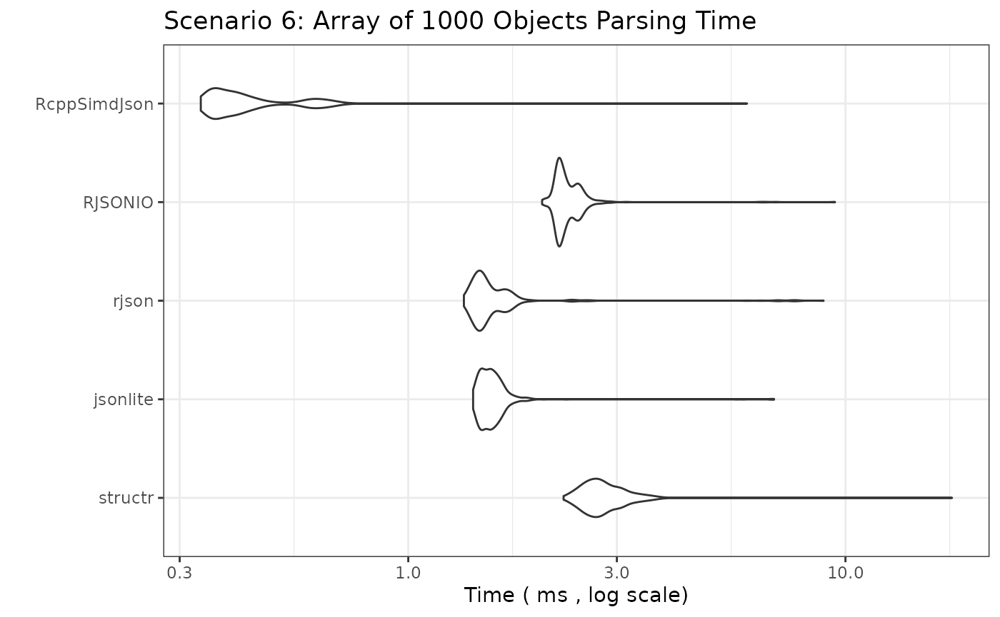

JSON Parsing Performance Benchmark: structr vs jsonlite vs rjson vs RJSONIO
2025-04-22
Source:vignettes/bench.Rmd
bench.RmdIntroduction
This document benchmarks the performance of different R packages for parsing JSON strings into R objects. We compare:
-
structr: Parses JSON and simultaneously validates it against a predefined schema (implemented in Rust usingserdeandsimd-json). -
jsonlite: A widely used, robust JSON parser (implemented in C). -
rjson: Another JSON parser (implemented in C). -
RJSONIO: A versatile JSON parser, often used for interfacing with web APIs (implemented in C).
The goal is to compare parsing speed across a wider range of JSON structures, from simple atomic values to large arrays and deeply nested objects.
Benchmark Setup
We will test several scenarios representing common and challenging
JSON structures. For structr, we pre-build the required
structure definitions outside the timed benchmark loop, reflecting
typical usage (define the structure once, parse many times).
Disclaimer
If you are reading this vignette on GitHub Pages, the benchmarks ran in GitHub Actions. The results will differ every time they run depending on many factors. If you want a true realistic benchmark, run the code in your own environment.
JSON Data and structr Schemas
The schemas and JSON objects are defined in the source code of this document. Since the values can be long, they are hidden from the final output, however, they are fully available in the source code.
Benchmarking Parameters
# Number of times to run each benchmark expression
# Adjust down for slower scenarios if needed
benchmark_times_fast <- 1000
benchmark_times_medium <- 500
benchmark_times_slow <- 100
# Unit for reporting timings
benchmark_unit_fast <- "us" # microseconds
benchmark_unit_medium <- "ms" # milliseconds
benchmark_unit_slow <- "ms" # millisecondsBenchmark Results
We now run the benchmarks for each scenario. The plots show the
distribution of execution times (lower is better). Note the Y-axis is
often on a logarithmic scale due to potentially large performance
differences. We use check = "equal" or wrap
fromJSON calls in try() for complex cases
where strict equality might fail due to floating point differences or
minor structural variations between parsers, focusing instead on raw
speed.
Scenario 1: Simple Flat Object
bm_simple_object <- microbenchmark(
structr = structr::parse_json(json_simple_object, structr_simple_object),
jsonlite = jsonlite::fromJSON(json_simple_object, simplifyDataFrame = FALSE),
rjson = rjson::fromJSON(json_simple_object),
RJSONIO = RJSONIO::fromJSON(json_simple_object, simplify = FALSE),
times = benchmark_times_fast, unit = benchmark_unit_fast, check = "equal"
)
print_and_plot(bm_simple_object,
title = "Scenario 1: Simple Flat Object Parsing Time",
y_label = paste("Time (", benchmark_unit_fast, ", log scale)")
)## Unit: microseconds
## expr min lq mean median uq max neval
## structr 4.599 6.6625 8.818304 8.8070 10.009 30.326 1000
## jsonlite 41.608 48.7015 58.865015 53.6050 61.610 2948.252 1000
## rjson 28.092 35.3265 41.207915 40.3710 44.067 100.277 1000
## RJSONIO 32.991 42.3295 47.592680 46.4615 51.511 122.108 1000
Scenario 2: Simple Array (Integers, 50 items)
bm_simple_array_int <- microbenchmark(
structr = structr::parse_json(json_simple_array_int, structr_simple_array_int),
jsonlite = jsonlite::fromJSON(json_simple_array_int), # simplify = TRUE default good here
rjson = rjson::fromJSON(json_simple_array_int),
RJSONIO = RJSONIO::fromJSON(json_simple_array_int), # simplify = TRUE default good here
times = benchmark_times_fast, unit = benchmark_unit_fast, check = "equal"
)
print_and_plot(bm_simple_array_int,
title = "Scenario 2: Simple Array (Integers) Parsing Time",
y_label = paste("Time (", benchmark_unit_fast, ", log scale)")
)## Unit: microseconds
## expr min lq mean median uq max neval
## structr 3.787 5.7505 7.310175 7.524 8.6460 27.151 1000
## jsonlite 32.440 37.1545 40.942777 40.606 42.9605 103.744 1000
## rjson 32.290 36.6385 42.037955 42.514 45.1595 106.949 1000
## RJSONIO 43.701 50.9755 59.330176 55.033 58.2885 3599.377 1000
Scenario 3: Simple Array (Strings, 26 items)
bm_simple_array_str <- microbenchmark(
structr = structr::parse_json(json_simple_array_str, structr_simple_array_str),
jsonlite = jsonlite::fromJSON(json_simple_array_str),
rjson = rjson::fromJSON(json_simple_array_str),
RJSONIO = RJSONIO::fromJSON(json_simple_array_str),
times = benchmark_times_fast, unit = benchmark_unit_fast, check = "equal"
)
print_and_plot(bm_simple_array_str,
title = "Scenario 3: Simple Array (Strings) Parsing Time",
y_label = paste("Time (", benchmark_unit_fast, ", log scale)")
)## Unit: microseconds
## expr min lq mean median uq max neval
## structr 4.128 5.9160 7.273729 7.2840 8.406 26.629 1000
## jsonlite 24.766 28.7785 32.278002 32.3150 34.319 84.548 1000
## rjson 29.495 32.5860 40.853775 37.9455 40.806 3270.633 1000
## RJSONIO 38.933 43.8770 49.039226 48.6250 51.967 152.244 1000
Scenario 4: Nested Object
bm_nested_object <-
microbenchmark(
structr = structr::parse_json(json_nested_object, structr_nested_object),
jsonlite = jsonlite::fromJSON(json_nested_object, simplifyVector = FALSE),
rjson = rjson::fromJSON(json_nested_object),
RJSONIO = RJSONIO::fromJSON(json_nested_object, simplify = FALSE), # avoid matrix/df conversion
times = benchmark_times_fast, unit = benchmark_unit_fast, check = NULL # Disable check due to potential minor diffs
)
print_and_plot(bm_nested_object,
title = "Scenario 4: Nested Object Parsing Time",
y_label = paste("Time (", benchmark_unit_fast, ", log scale)")
)## Unit: microseconds
## expr min lq mean median uq max neval
## structr 16.080 19.852 23.07585 23.3440 25.2270 73.707 1000
## jsonlite 26.389 31.484 38.61981 35.7620 38.3870 2972.737 1000
## rjson 41.046 47.674 54.08196 54.4565 57.8380 132.137 1000
## RJSONIO 52.798 60.658 66.30645 65.5375 69.1635 186.227 1000
Scenario 5: Array of Simple Objects (100 Objects)
bm_array_of_objects <-
microbenchmark(
structr = structr::parse_json(json_array_of_objects, structr_array_of_objects),
jsonlite = jsonlite::fromJSON(json_array_of_objects, simplifyVector = FALSE, simplifyDataFrame = FALSE), # Force list output
rjson = rjson::fromJSON(json_array_of_objects),
RJSONIO = RJSONIO::fromJSON(json_array_of_objects, simplify = FALSE), # Results in list of lists
times = benchmark_times_medium, unit = benchmark_unit_medium, check = "equal"
)
print_and_plot(bm_array_of_objects,
title = "Scenario 5: Array of 100 Objects Parsing Time",
y_label = paste("Time (", benchmark_unit_medium, ", log scale)")
)## Unit: milliseconds
## expr min lq mean median uq max neval
## structr 0.153928 0.2023025 0.2254797 0.2157825 0.2330300 3.421405 500
## jsonlite 0.123892 0.1546935 0.1665400 0.1619675 0.1685290 3.368566 500
## rjson 0.164246 0.1795550 0.1958631 0.1987305 0.2082035 0.282157 500
## RJSONIO 0.250848 0.2655505 0.2834208 0.2740010 0.2854425 3.518966 500
Scenario 6: Large Array of Simple Objects (1000 Objects)
bm_large_array_of_objects <-
microbenchmark(
structr = structr::parse_json(json_large_array_of_objects, structr_large_array_of_objects),
jsonlite = jsonlite::fromJSON(json_large_array_of_objects, simplifyVector = FALSE, simplifyDataFrame = FALSE),
rjson = rjson::fromJSON(json_large_array_of_objects),
RJSONIO = RJSONIO::fromJSON(json_large_array_of_objects, simplify = FALSE),
times = benchmark_times_medium,
unit = benchmark_unit_medium,
check = "equal" # Disable check
)
print_and_plot(bm_large_array_of_objects,
title = "Scenario 6: Array of 1000 Objects Parsing Time",
y_label = paste("Time (", benchmark_unit_medium, ", log scale)")
)## Unit: milliseconds
## expr min lq mean median uq max neval
## structr 1.897962 2.188754 2.357311 2.259837 2.386839 7.506218 500
## jsonlite 1.391556 1.420641 1.523145 1.441174 1.560898 5.757764 500
## rjson 1.354798 1.414014 1.672150 1.448252 1.638848 10.861749 500
## RJSONIO 2.035759 2.169367 2.292326 2.186656 2.362760 6.683853 500
Scenario 7: Large Integer Array (10,000 items)
bm_large_array_int <-
microbenchmark(
structr = structr::parse_json(json_large_array_int, structr_large_array_int),
jsonlite = jsonlite::fromJSON(json_large_array_int),
rjson = rjson::fromJSON(json_large_array_int),
RJSONIO = RJSONIO::fromJSON(json_large_array_int),
times = benchmark_times_medium,
unit = benchmark_unit_medium,
check = "equal"
)
print_and_plot(bm_large_array_int,
title = "Scenario 7: Large Integer Array (10k) Parsing Time",
y_label = paste("Time (", benchmark_unit_medium, ", log scale)")
)## Unit: milliseconds
## expr min lq mean median uq max neval
## structr 0.192329 0.198320 0.2113043 0.204266 0.2258865 0.302304 500
## jsonlite 2.498072 2.643724 2.8089790 2.717677 2.7938240 10.678498 500
## rjson 1.049078 1.068514 1.1831400 1.082460 1.1069805 4.970736 500
## RJSONIO 2.520524 2.556957 2.6231048 2.569069 2.5949825 7.019299 500
Scenario 8: Large String Array (10,000 items)
bm_large_array_str <-
microbenchmark(
structr = structr::parse_json(json_large_array_str, structr_large_array_str),
jsonlite = jsonlite::fromJSON(json_large_array_str),
rjson = rjson::fromJSON(json_large_array_str),
RJSONIO = RJSONIO::fromJSON(json_large_array_str),
times = benchmark_times_medium,
unit = benchmark_unit_medium,
check = "equal"
)
print_and_plot(bm_large_array_str,
title = "Scenario 8: Large String Array (10k) Parsing Time",
y_label = paste("Time (", benchmark_unit_medium, ", log scale)")
)## Unit: milliseconds
## expr min lq mean median uq max neval
## structr 0.679307 0.6963195 0.7175343 0.712354 0.735407 0.877358 500
## jsonlite 2.295213 2.3906305 2.5140479 2.465882 2.538722 6.364377 500
## rjson 1.347906 1.3759180 1.6466422 1.407963 1.434322 84.632965 500
## RJSONIO 3.428858 3.4719645 3.5874035 3.489712 3.513587 7.372968 500
Scenario 9: Deeply Nested Object (10 levels)
bm_deep_nest <- microbenchmark(
structr = structr::parse_json(json_deep_nest, structr_deep_nest),
jsonlite = jsonlite::fromJSON(json_deep_nest, simplifyVector = FALSE, simplifyDataFrame = FALSE),
rjson = rjson::fromJSON(json_deep_nest),
RJSONIO = RJSONIO::fromJSON(json_deep_nest, simplify = FALSE),
times = benchmark_times_fast,
unit = benchmark_unit_fast,
check = "equal"
)
print_and_plot(bm_deep_nest,
title = "Scenario 9: Deeply Nested Object (10 Levels) Parsing Time",
y_label = paste("Time (", benchmark_unit_fast, ", log scale)")
)## Unit: microseconds
## expr min lq mean median uq max neval
## structr 12.604 15.0180 17.21643 17.2770 18.5450 47.809 1000
## jsonlite 16.421 19.3915 22.38626 22.6170 24.1350 78.257 1000
## rjson 29.686 34.6995 43.30566 39.6595 42.4140 3837.831 1000
## RJSONIO 37.330 43.3205 47.95253 47.7740 50.5095 141.484 1000
Scenario 10: Wide Object (100 fields)
bm_wide_object <- microbenchmark(
structr = structr::parse_json(json_wide_object, structr_wide_object),
jsonlite = jsonlite::fromJSON(json_wide_object, simplifyVector = FALSE, simplifyDataFrame = FALSE),
rjson = rjson::fromJSON(json_wide_object),
RJSONIO = RJSONIO::fromJSON(json_wide_object, simplify = FALSE),
times = benchmark_times_medium,
unit = benchmark_unit_medium,
check = "equal"
)
print_and_plot(bm_wide_object,
title = "Scenario 10: Wide Object (100 Fields) Parsing Time",
y_label = paste("Time (", benchmark_unit_medium, ", log scale)")
)## Unit: milliseconds
## expr min lq mean median uq max neval
## structr 0.068377 0.0795285 0.08522201 0.0850340 0.0884100 0.137076 500
## jsonlite 0.038992 0.0480795 0.05267714 0.0523625 0.0551575 0.102221 500
## rjson 0.062938 0.0711480 0.07880645 0.0786165 0.0834915 0.173754 500
## RJSONIO 0.081883 0.0894370 0.09662326 0.0943310 0.1010585 0.238635 500